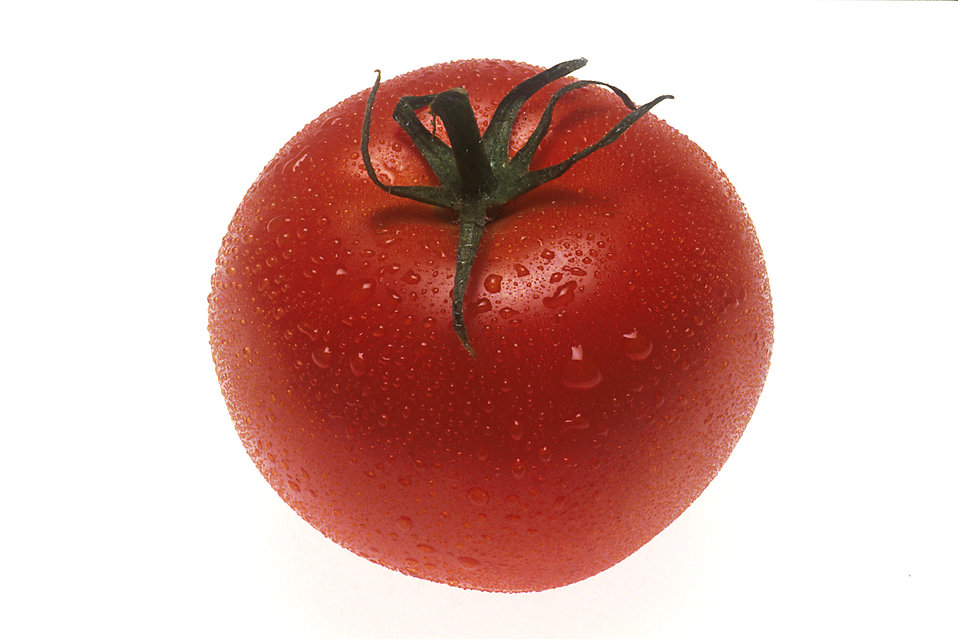

Getting Started
To grow healthy tomato plants, you will need the following:
- Lots of sunlight
- Well drained soil
- Stakes or cages
- Tomato seeds
- A source of water
Use this table to choose the varieties you plan to grow!
Here are some tips for growing tomatoes from Sunset magazine.
What I like about this page:
- Pictures to go with tips
- Good information
- Simple navigation to other pages
What I don't like about this page:
- Cluttered page layout
- Unrelated promoted stories
- I don't like orange
- Clicking through tips is inconvenient
